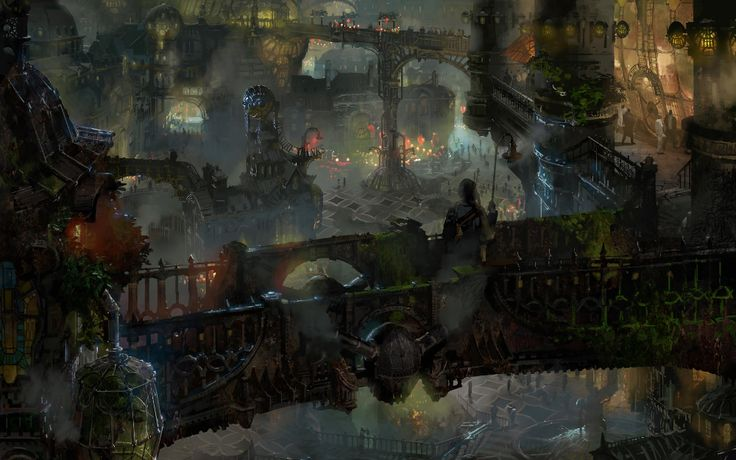
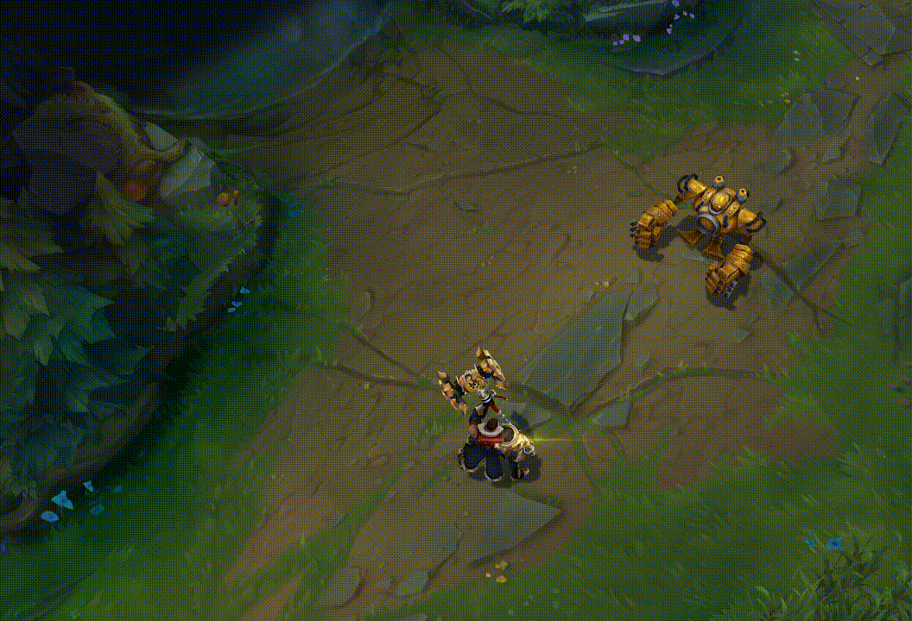

Proyecto “Limpieza Profunda Zaun”
Rol: Unidad de optimización industrial autónoma
- Recolección eficiente de residuos tóxicos en zonas de alto riesgo.
- Implementación de mejoras operativas sin supervisión constante.
- Reducción significativa de incidentes laborales (y aumento del respeto hacia los robots conscientes).

Proyecto “Atracción Forzada de Talento”
Rol: Especialista en reclutamiento inmediato de corta distancia
- Captación directa de objetivos estratégicos mediante brazo propulsado de alta precisión.
- Reubicación involuntaria de personal enemigo a zonas de negociación intensiva (bajo torre).
- Mejora notable en cierres de equipo y discusiones en el chat global.

Proyecto “Optimización Energética en Reuniones Grupales”
Rol: Coordinador de descargas eléctricas masivas
- Liberación controlada de pulsos eléctricos en entornos de alta densidad competitiva.
- Interrupción efectiva de habilidades molestas y discursos mágicos extensos.
- Incremento del orden táctico a través del silencio obligatorio.

Proyecto “Movilidad Acelerada y Persistencia Mecánica”
Rol: Unidad de iniciación y presión psicológica
- Activación de sobrecarga para aproximaciones dramáticas a alta velocidad.
- Implementación de escudo de emergencia ante intentos fallidos (frecuentes pero valientes).
- Generación constante de amenaza estratégica y respeto moderado hacia la ingeniería de Zaun.